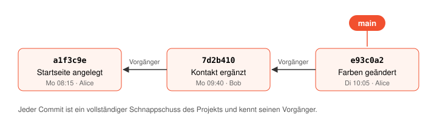
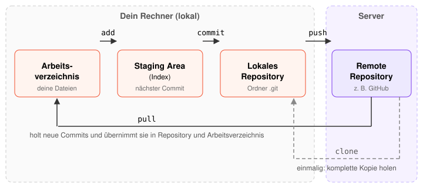

Lektion 1.1 — Teil 1: Git-Grundlagen & Werkzeuge
Sinn und Zweck von Git
Lernziele
- Erklären, welche Probleme eine Versionsverwaltung löst
- Zentrale und verteilte Versionsverwaltung unterscheiden
- Git und GitHub voneinander abgrenzen
- Die Begriffe Repository, Commit und Remote erklären
- Arbeitsverzeichnis, Staging Area und lokales Repository beschreiben
- Den Zweck von
clone,commit,pushundpullin eigenen Worten erklären
1 — Das Problem: „final_v2_wirklich_final.zip“
Wer ohne Versionsverwaltung programmiert, kennt diese Situationen:
- Der Projektordner heißt
projekt,projekt_alt,projekt_neu,projekt_final,projekt_final2… - Gestern hat alles funktioniert, heute nicht mehr — aber was wurde seither geändert?
- Im Team schickt man sich ZIP-Dateien per Mail oder USB-Stick und kopiert Änderungen von Hand zusammen. Dabei überschreibt jemand versehentlich die Arbeit eines anderen.
- Der Laptop geht kaputt — und mit ihm die einzige Kopie des Projekts.
Eine Versionsverwaltung (Version Control System, VCS) löst diese Probleme: Sie speichert die gesamte Historie eines Projekts, sodass jeder frühere Stand wiederhergestellt werden kann, und sie führt die Arbeit mehrerer Personen kontrolliert zusammen.
| Ohne Versionsverwaltung | Mit Git |
|---|---|
| Kopien von Ordnern mit Datum im Namen | Ein Ordner, jeder Stand ist als Commit gespeichert |
| „Was habe ich gestern geändert?“ — keine Ahnung | Jede Änderung ist mit Zeitpunkt, Autor und Beschreibung nachvollziehbar |
| Fehler eingebaut → mühsam suchen | Zu einem funktionierenden Stand zurückkehren oder vergleichen |
| Dateien per Mail austauschen | Änderungen über einen gemeinsamen Server austauschen und automatisch zusammenführen |
| Experimente gefährden den funktionierenden Code | Experimente auf einem eigenen Entwicklungszweig |
| Eine einzige Kopie am Laptop | Vollständige Kopien bei jedem Teammitglied und am Server |
2 — Zentral oder verteilt?
Es gibt zwei grundsätzliche Bauarten von Versionsverwaltungen:
Zentral (z. B. Subversion/SVN)
Die Historie liegt nur auf einem Server. Jede Person hat lokal nur den aktuellen Stand. Ohne Verbindung zum Server kann man keine Versionen speichern oder die Historie ansehen.
Verteilt (z. B. Git)
Jede Person hat eine vollständige Kopie mit der gesamten Historie. Versionen speichern, vergleichen und zurückspringen funktioniert offline; der Server dient nur zum Austausch.
Git wurde 2005 von Linus Torvalds entwickelt, dem Erfinder von Linux, um die Entwicklung des Linux-Kernels mit tausenden Beteiligten zu verwalten. Ziele waren Geschwindigkeit, Sicherheit gegen Datenverlust und gute Unterstützung paralleler Entwicklung. Heute ist Git mit großem Abstand die meistverwendete Versionsverwaltung — vom Schulprojekt bis zu Unternehmen wie Microsoft oder Google.
Bei Git hat jeder Rechner das ganze Projekt samt Historie. Geht der Server kaputt, ist nichts verloren — jede Kopie ist ein vollständiges Backup.
3 — Git ist nicht GitHub
Die beiden Namen werden oft verwechselt, bezeichnen aber verschiedene Dinge:
| Git | GitHub | |
|---|---|---|
| Was? | Programm zur Versionsverwaltung | Webplattform, die Git-Repositories speichert (Hosting) |
| Wo? | läuft lokal auf deinem Rechner | läuft im Internet (github.com) |
| Wofür? | Versionen speichern, vergleichen, zusammenführen | Austausch im Team, Code Review, Issues, Automatisierung, Veröffentlichung |
| Anbieter | freie Open-Source-Software | Unternehmen (gehört zu Microsoft), kostenlose Accounts |
Git funktioniert auch ganz ohne GitHub. Alternativen zu GitHub sind z. B. GitLab, Bitbucket oder selbst betriebene Server wie Gitea. Die Git-Befehle sind überall dieselben.
4 — Repository und Commit
Ein Repository (kurz Repo) ist ein Projektordner, dessen Historie Git
verwaltet. Git speichert diese Historie in einem versteckten Unterordner .git. Den Ordner
.git bearbeitest du nie von Hand — das erledigen die Git-Befehle.
Ein Commit ist ein gespeicherter Stand des Projekts — ein Schnappschuss aller Dateien zu einem bestimmten Zeitpunkt. Zu jedem Commit speichert Git:
- den Inhalt aller Dateien (unveränderte Dateien werden intern nicht doppelt gespeichert),
- Autor (Name und E-Mail) und Zeitpunkt,
- eine Commit-Message, die beschreibt, was geändert wurde,
- einen Verweis auf den Vorgänger-Commit,
- eine eindeutige ID, den Commit-Hash (40 Hexadezimalzeichen, meist auf 7 gekürzt, z. B.
e93c0a2).

Die Commits eines Projekts bilden so eine Kette, die man rückwärts bis zum allerersten Commit
verfolgen kann. Diese Hauptlinie der Entwicklung heißt in neuen Repositories üblicherweise
main (in älteren Repositories oft master). Später wirst du sehen, dass
es neben main weitere, parallele Linien geben kann.
Der Hash wird aus dem Inhalt des Commits berechnet (Dateien, Message, Autor, Vorgänger). Ändert sich auch nur ein Zeichen, entsteht ein völlig anderer Hash. Dadurch merkt Git sofort, wenn Daten beschädigt oder manipuliert wurden, und ein Commit lässt sich weltweit eindeutig benennen.
5 — Die drei Bereiche und das Remote
Auf deinem Rechner unterscheidet Git drei Bereiche. Dazu kommt das Repository am Server:
| Bereich | Was liegt dort? |
|---|---|
| Arbeitsverzeichnis (Working Directory) | Die Dateien, die du im Editor siehst und bearbeitest. |
| Staging Area (auch Index) | Eine Vormerkliste: die Änderungen, die in den nächsten Commit kommen sollen. |
| Lokales Repository | Alle Commits, gespeichert im Ordner .git. |
| Remote Repository | Eine Kopie des Repositorys auf einem Server (z. B. GitHub), über die das Team Commits austauscht. Das Standard-Remote heißt origin. |

Warum der Zwischenschritt über die Staging Area? Du hast vielleicht an drei Dateien gearbeitet, aber nur zwei Änderungen gehören inhaltlich zusammen. Du merkst genau diese zwei für den Commit vor und committest die dritte später separat. So entstehen kleine, verständliche Commits.
6 — Die vier Grundoperationen
Für die tägliche Arbeit im Team brauchst du anfangs nur vier Operationen:
| Operation | Richtung | Bedeutung | Wie oft? |
|---|---|---|---|
| clone | Server → Rechner | Eine vollständige Kopie eines Remote-Repositorys herunterladen | einmal pro Projekt und Rechner |
| commit | lokal | Die vorgemerkten Änderungen als neuen Schnappschuss im lokalen Repository speichern | oft, nach jedem sinnvollen Arbeitsschritt |
| push | Rechner → Server | Eigene neue Commits zum Remote hochladen, damit andere sie bekommen | regelmäßig, mindestens am Ende der Arbeit |
| pull | Server → Rechner | Neue Commits der anderen herunterladen und in den eigenen Stand übernehmen | vor Arbeitsbeginn und vor jedem Push |
Ein typischer Arbeitstag im Team sieht damit so aus:
- pull — den aktuellen Stand der anderen holen
- Dateien bearbeiten
- Änderungen vormerken (add) und commiten — Schritte 2 und 3 mehrmals
- pull — nochmals prüfen, ob inzwischen jemand etwas hochgeladen hat
- push — die eigenen Commits hochladen
Ein Commit speichert nur lokal. Solange du nicht pushst, sieht niemand sonst deine Arbeit — und wenn dein Laptop kaputtgeht, sind die Commits weg. Umgekehrt kannst du nur pushen, was du vorher committet hast.
In Lektion 1.2 installierst du Git, richtest GitHub ein und führst clone, commit, push und pull zum ersten Mal selbst aus.
Projektschritt
Den Steckbrief vorbereiten
Im ganzen Kurs versionierst du eine kleine Webseite über dich. Lege dafür einen Ordner
steckbrief-entwurf an und darin eine Datei index.html. Git verwendest du noch nicht
— die Datei kommt in Lektion 1.2 in dein erstes Repository.
<!DOCTYPE html>
<html lang="de">
<head>
<meta charset="utf-8">
<meta name="viewport" content="width=device-width, initial-scale=1">
<title>Steckbrief</title>
</head>
<body>
<h1>Max Muster</h1>
<p>Schüler an der HTL, Klasse 3AHIF.</p>
</body>
</html>Ersetze Namen und Klasse durch deine eigenen Daten.
Lege Projekte, die du später mit Git verwaltest, nicht in OneDrive, Dropbox oder
iCloud ab. Die Synchronisation dieser Dienste kann den Ordner .git beschädigen. Ein
Ordner wie C:\Users\name\dev oder ~/dev ist ideal.
Häufige Fehler
3 Fehler · zum Aufklappen klicken
„Ich kann Git nicht verwenden, ich habe keinen GitHub-Account.“ — Git läuft vollständig lokal; GitHub ist nur einer von vielen Servern zum Austauschen.
Git = Werkzeug am eigenen Rechner. GitHub = Plattform im Internet, auf der Git-Repositories liegen.
Die Teamkollegin wartet auf deine Änderungen, sieht aber nichts — du hast zwar fleißig committet, aber nie gepusht.
Commits sind lokal. Erst push überträgt sie zum Server. Am Ende jeder Arbeitssitzung pushen.
Das Projekt liegt in OneDrive. Nach dem Arbeiten auf zwei Rechnern meldet Git plötzlich beschädigte Objekte oder seltsame Dateien wie index (1).
Repositories außerhalb von Sync-Ordnern anlegen. Git selbst ist die Synchronisation — über push und pull.
Aufgaben
3 Aufgaben + Bonus · zum Aufklappen klicken
Erkläre in je ein bis zwei Sätzen: Repository, Commit, Commit-Hash, Remote, Staging Area. Verwende dabei keine der anderen Fachbegriffe ohne sie zu erklären.
Lea ändert index.html, merkt die Änderung vor, committet sie und pusht sie. Danach holt Tom den neuen Stand. Zeichne die vier Bereiche aus Abschnitt 5 und trage für jeden Schritt ein, von wo nach wo die Änderung wandert und wie der Befehl heißt.
Euer Schulserver fällt eine Woche lang aus. Beschreibe, was ein Team mit einer zentralen Versionsverwaltung und was ein Team mit Git in dieser Woche noch tun kann — und was nicht.
Vergleiche GitHub, GitLab und Codeberg in einer Tabelle: Wer betreibt die Plattform? Gibt es kostenlose private Repositories? Kann man die Software selbst betreiben? Welche Plattform würdest du für ein Schulprojekt wählen und warum?
Quiz
5 Fragen · zum Aufklappen klicken
Frage 1 Was trifft auf einen Commit zu?
Mehrere Antworten sind richtig.
Frage 2 Welche Aussagen über Git und GitHub stimmen?
Mehrere Antworten sind richtig.
Frage 3 Du hast drei Dateien geändert, willst aber nur zwei davon in den nächsten Commit aufnehmen. Welcher Bereich macht das möglich?
Frage 4 Was passiert bei einem push?
Frage 5 Warum ist Git eine verteilte Versionsverwaltung?